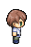
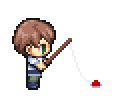

1 シーン管理
ゲームづくりにおいて、重要な考えがシーンと呼ばれるものです。普段私たちが遊んでいるゲームにはさまざまなシーンが存在します。例えば、「戦闘画面」「移動画面」「購入画面」などです。これらのシーンをスムーズに切り替えるためには、どの画面からどの画面へどうやって移るのかをしっかりと計画する必要があります。
あるいは、ターン制のバトルゲームを考えてみましょう。自分のターンのときは、「攻撃する」「道具を使う」など、コマンドを選択できる必要がありますが、相手のターンのときは選択できないようにする必要があります。
このように、ゲームづくりにおいて「この入力はいつ受け付けるのか」や「この画像はいつ表示するのか」といった条件の計画・確認が非常に重要になります。そこで状態遷移図というツールが役立ちます。
今回は、状態遷移図について学んだうえで、釣りゲームにどのような処理が必要か考え、実装していきましょう。
2 もくじ
3 状態遷移図とは
状態遷移図とは、ゲームの各シーン（状態）がどのように繋がっているかを図で表したものです。例えば、プレイヤーが移動中の画面から敵に遭遇したら戦闘画面に切り替わる、戦闘が終わったら再び移動画面に戻る、などの流れを視覚的に示します。これにより、ゲーム全体の流れが一目でわかるようになります。
状態遷移図は、状態を表す〇と、イベントを表す矢印で構成されます。イベントでは、条件や処理内容を記述します。
例として、キャラクターを操作してマップ上を移動するプログラムを考えてみましょう。

この場合、「待機中」と「移動中」の2つの状態があります。それぞれの状態を矢印がつないでいます。
今、「待機中」の状態にあるとしましょう。「待機中」から「移動中」に向かう矢印には「移動キー押下 かつ 移動可能」とあります。これは、その状態に遷移する条件を示しています。つまり、「待機中」のときに移動キーを押して、なおかつその先が移動できる場所であれば「移動中」になるということです。
今度は、「待機中」から自分自身に向かっている矢印に注目してください。この場合、スラッシュの前半は条件を、後半は処理を示しています。つまり、「待機中」のときに移動キーを押したものの、その先が移動できない場所であれば、向きだけ変えて状態は「待機中」のままということです。
このように、状態遷移図を用いることで全体の流れを整理できる点が大きな魅力です。どの状態からどの状態へ、どんな条件で移るのかが明確になるため、設計がスムーズになります。また、状態遷移図を作成することで、必要な画面の切り替えを忘れてしまったり、逆に不要な切り替えをしてしまうなどのミスも防ぐことができます。特に複雑なシステムではとても大きな効果を発揮します。
この状態遷移図を活用して釣りゲームを作っていきましょう！…と言いたいところですが、先に少し準備が必要です。
4 画像を準備する
キャラクタの画像を用意しましょう。
 
ここからzipファイルをダウンロードしてください。
ファイルをダウンロードしたら、解凍したのち、中の画像すべてをimgフォルダの中に移動してください。
5 画像を表示する
新しいpythonファイルgame03.pyを作成してください。ここからプログラムをコピー＆ペーストして実行してみてください。キャラクターが表示されているはずです。このプログラムの要点について解説します。
40行目からキャラクタに関する処理が記述されています。変数charaX、charaYがキャラクタの座標です。49行目では、画像を辞書型で読み込んでいます。
そして、61行目からはキャラクタの画像を配置する関数が定義されています。
#キャラクターを再描写する関数
def setChara(x,y,state):
"""
x:キャラのX座標
y:キャラのY座標
state:キャラの状態
"""
#今の画像を消して再描写
canvas.delete("chara")
canvas.create_image(x,y,image =BIG_CHARA_IMAGE[state] ,tag="chara",anchor=tk.NW)6 釣りのシステムを整える
以下の状態遷移図をもとに、システムを整えましょう。

まず、現在どの状態にいるのかを示すために、変数flagを用意します。
flag | 意味 default | 待機中 wait | 釣り中 hit | ウキが沈む success | 釣り成功 result | 釣り結果表示
今回は、このflagの中身を確認することでどの状態にいるのか判定できます。また、状態を遷移する際にはflagの中身も忘れずに変更しなければいけません。
if flag == "default": #待機中のとき
待機中の処理を記述
if(("space" in key) and ("space" not in prevKey)):
待機中にスペースキーが押されたときの処理（釣りを開始する）
flag = "wait"
if (flag == "wait"): #魚釣り中のとき
魚釣り中の処理を記述
・・・ここからプログラムをコピー＆ペーストして実行してみてください。スペースキーを押すと、キャラクターが釣りをする姿勢になります。
game03.pyから変更されたのは、以下のフラグによる条件分岐の箇所だけです。
#>>ゲームのメインループ関数>>
def gameLoop():
global charaX,charaY,flag,key,currentKey,prevKey,waitTick,fishingCount,resultWindow
if (flag == "default"): #待機中のとき
setChara(charaX,charaY,"default")
if(("space" in key) and ("space" not in prevKey)):
canvas.delete("icon")#釣りアイコン削除
flag = "wait" #魚釣り中に遷移
waitTick = random.randint(round(3000/TICK_TIME),round(7000/TICK_TIME))#3-7秒
fishingCount = 0 #待ち時間をランダムに決定
elif (flag == "wait"):#魚釣り中のとき
if(fishingCount == 0):#初回なら
#キャラクター再描写
setChara(charaX,charaY,"wait")
elif(fishingCount >= waitTick):#待ち時間を終えたとき
flag = "hit" #「ウキ沈む」に遷移
waitTick = 10
fishingCount = 0
if (flag == "wait"):
fishingCount += 1 #待機カウンタを増やす
elif (flag == "hit"): #魚がかかったとき
if(("space" in key) and ("space" not in prevKey)): #スペースキー押下されたとき
flag = "success"
fishingCount = 0
elif(fishingCount == 0):#初回なら
#キャラクター再描写
setChara(charaX,charaY,"fight")
print("ビク！")
if (flag == "hit"):
fishingCount += 1
「ウキ投下中」から「ウキ沈む」には、時間の経過によって遷移します。そのため、変数fishingCountを用いて時間を計っています。処理を1回行うごとにfishingCountを1ずつ増やしていき、変数waitTickと同じ値になれば遷移する仕組みです。
waitTickはランダムに決定しているので、魚はすぐ釣れるときもあればなかなか釣れないときもあります。
7 釣りの失敗を実装する
今の状態では、釣りは絶対に失敗することがありません。これではゲームとしてはイマイチです。そこで、スペースキーを押すのが早すぎたり遅すぎたりしたら失敗するように改造しましょう。

失敗したときは、flagは"default"にすることにします。
Challenge A2-1 「ウキ投下中」にスペースキーを押したら失敗する処理を追加しましょう。
Challenge A2-2 「ウキ沈む」に遷移したのち、一定時間が経過すると失敗する処理を追加しましょう。
解答例
elif (flag == "wait"):#魚釣り中のとき
#!!!!!!!!!!!!ここから!!!!!!!!!!!!!
if(("space" in key) and ("space" not in prevKey)):
print("早すぎた！")
flag = "default"
#!!!!!!!!!!!!ここまで!!!!!!!!!!!!!
elif(fishingCount == 0):#初回なら
#キャラクター再描写
setChara(charaX,charaY,"wait")
elif(fishingCount >= waitTick):#待ち時間を終えたとき
flag = "hit" #「ウキ沈む」に遷移
waitTick = 10
fishingCount = 0
if (flag == "wait"):
fishingCount += 1 #待機カウンタを増やす elif (flag == "hit"): #魚がかかったとき
if(("space" in key) and ("space" not in prevKey)): #スペースキー押下されたとき
flag = "success"
fishingCount = 0
elif(fishingCount == 0):#初回なら
#キャラクター再描写
setChara(charaX,charaY,"fight")
print("ビク！")
#!!!!!!!!!!!!ここから!!!!!!!!!!!!!
elif(fishingCount >= waitTick):#待ち時間を終えたとき
print("遅すぎた！")
flag = "default"
#!!!!!!!!!!!!ここまで!!!!!!!!!!!!!
if (flag == "hit"):
fishingCount += 18 ウキが少しだけ沈むイベントを実装する

実際の魚釣りでは、魚が喰いつく前に餌をつつくことがあります。それを実装してみましょう。
ウキがピクピクしているときにあせってスペースキーを押すと魚を逃がしてしまいます。ウキがピクピクするか沈むかはランダムで決定します。flagは"bite"にすることにします。
まず、「釣り中」に一定時間経過したらウキがピクピクするか沈むかはランダムで決定するように書き換えます。
elif (flag == "wait"):#魚釣り中のとき
if(("space" in key) and ("space" not in prevKey)):
print("早すぎた！")
flag = "default"
elif(fishingCount == 0):#初回なら
#キャラクター再描写
setChara(charaX,charaY,"wait")
elif(fishingCount >= waitTick):#待ち時間を終えたとき
#!!!!!!!!!!!!!ここから!!!!!!!!!!!!!!!!
if(random.randint(1,3)!=1):#2/3の確率で
flag = "hit"
waitTick = 10
fishingCount = 0
else:
flag = "bite"
waitTick = random.randint(2,10)
fishingCount = 0
#!!!!!!!!!!!!!ここまで!!!!!!!!!!!!!!!!そして、flagが"bite"のときの処理を追加します。
条件分岐が状態遷移図と対応していいるのを確認してください。
少し時間が経過したら"default"に戻るようになっています。
elif (flag == "bite"): #魚が少し喰いついたとき
if(("space" in key) and ("space" not in prevKey)): #スペースキー押下されたとき
setIcon(charaX,charaY,"miss")#アイコン描写
print("早すぎた！")
flag = "default"
elif(fishingCount == 0):#初回なら
setChara(charaX,charaY,"bite")
print("ピク...")
elif(fishingCount >= waitTick):#待ち時間を終えたとき
flag = "wait"
waitTick = random.randint(round(200/TICK_TIME),round(2000/TICK_TIME))
fishingCount = 0
if (flag == "bite"):
fishingCount += 19 ゲームを改造する
これにて、簡単な釣りゲームの完成です！ここからは、自由に改造してみてください。
改造例を提示します。ウキが少しだけ沈むイベントを実装しましたが、このままだと「ウキが沈んだ」のか「ピクピクしている」だけなのか区別がつきにくくなってしまいました。そこで、ヒットしたときに頭上にアイコンを表示して、分かりやすくしてみました。以下にプログラム全体を示します。
実行する前にここからzipファイルをダウンロードして、imgフォルダに解凍してください。実行すると、各状態に遷移したときに、頭上にアイコンを表示されます。
次回からは釣りとは少し離れて、マップの表示やキャラクタの歩行について学びましょう。
import copy
import os
import random
import tkinter as tk
#>>ディレクトリ>>
cwd = os.getcwd()
#>>マップ設定>>
MAP_SIZE_X = 384 #マップ画像のxピクセル数
MAP_SIZE_Y = 384 #マップ画像のyピクセル数
MAGNIFICATION_RATE = 2 # 拡大率
#>>ウィンドウ、キャンバス>>
CANVAS_WIDTH = MAP_SIZE_X * MAGNIFICATION_RATE #キャンバス幅
CANVAS_HEIGHT = MAP_SIZE_Y * MAGNIFICATION_RATE #キャンバス高さ
MARGINE_X = 2 #マージン
MARGINE_Y = 2 #マージン
CANVAS_SIZE = f"{CANVAS_WIDTH+MARGINE_X}x{CANVAS_HEIGHT+MARGINE_Y}"#キャンバスサイズ
#ウィンドウ設置
root = tk.Tk()
root.title("game07")
root.geometry(CANVAS_SIZE)
#キャンバス設置
canvas = tk.Canvas(root,width = CANVAS_WIDTH,height = CANVAS_HEIGHT,bg = "skyblue")
canvas.pack()
#マップ画像
MAP_IMAGE = tk.PhotoImage(file = cwd+"/img/fishing_map.png")
MAP_BIG_IMAGE = MAP_IMAGE.zoom(MAGNIFICATION_RATE,MAGNIFICATION_RATE)
#>>キャラクター>>
CHARA_WIDTH = 64 #キャラの幅
CHARA_HEIGHT = 96 #キャラの高さ
#キャラクターの座標
charaX = 160 * MAGNIFICATION_RATE
charaY = 128 * MAGNIFICATION_RATE
flag = "default"
'''
default:通常状態
wait:釣り中
bite:ウキがピクつく
hit:ウキが沈む
fight:格闘中
success:釣り成功
result:釣り結果表示
'''
fishingCount = 0
waitTick = 0
#ゲームの基本となる1ティック時間(ms)
TICK_TIME = 50
#キャラクターの画像
CHARA_IMAGE = {
"default":tk.PhotoImage(file = cwd+"/img/character_A.png"),
"wait":tk.PhotoImage(file = cwd+"/img/character_B.png"),
"bite":tk.PhotoImage(file = cwd+"/img/character_C.png"),
"hit":tk.PhotoImage(file = cwd+"/img/character_D1.png"),
"fight":tk.PhotoImage(file = cwd+"/img/character_D2.png"),
}
BIG_CHARA_IMAGE = {key :img.zoom(MAGNIFICATION_RATE,MAGNIFICATION_RATE) for key , img in CHARA_IMAGE.items()}
#キャラクターを再描写する関数
def setChara(x,y,state):
"""
x:キャラのX座標
y:キャラのY座標
state:キャラの状態
"""
#今の画像を消して再描写
canvas.delete("chara")
canvas.create_image(x,y,image =BIG_CHARA_IMAGE[state] ,tag="chara",anchor=tk.NW)
#>>アイコン>>
# 吹き出し
ICON = {
"fishing":tk.PhotoImage(file = cwd+"/img/fishing.png"),
"hit":tk.PhotoImage(file = cwd+"/img/hit.png"),
"miss":tk.PhotoImage(file = cwd+"/img/miss.png"),
"fight":tk.PhotoImage(file = cwd+"/img/fight.png"),
"success":tk.PhotoImage(file = cwd+"/img/success.png"),
}
BIG_ICON = {key :img.zoom(MAGNIFICATION_RATE//1,MAGNIFICATION_RATE//1) for key , img in ICON.items()}
#アイコンを表示する関数
def setIcon(x,y,type):
"""
x:キャラのx座標
y:キャラのy座標
type:アイコンの種類
"""
# 一回消して再描写
canvas.delete("icon")
canvas.create_image(
x+CHARA_WIDTH*MAGNIFICATION_RATE/16,
y-CHARA_HEIGHT*MAGNIFICATION_RATE/2,
image = BIG_ICON[type],
tag="icon",
anchor=tk.NW
)
#>>魚>>
fishFlag = False #釣り可能かどうか
FISH_IMAGE = {
"イワシ":tk.PhotoImage(file = cwd+"/img/iwashi.png"),
"アジ":tk.PhotoImage(file = cwd+"/img/aji.png"),
"サバ":tk.PhotoImage(file = cwd+"/img/saba.png"),
"タチウオ":tk.PhotoImage(file = cwd+"/img/tachiuo.png"),
"カワハギ":tk.PhotoImage(file = cwd+"/img/kawahagi.png"),
"メバル":tk.PhotoImage(file = cwd+"/img/mebaru.png"),
"タイ":tk.PhotoImage(file = cwd+"/img/tai.png"),
"スズキ":tk.PhotoImage(file = cwd+"/img/suzuki.png"),
"サケ":tk.PhotoImage(file = cwd+"/img/sake.png"),
}
BIG_FISH_IMAGE = {key :img.zoom(2,2) for key , img in FISH_IMAGE.items()}
LOW_RARE_FISH = [
{
"name":"イワシ",
"img":FISH_IMAGE["イワシ"],
"aveWeight":0.12, #平均重量
"price":60 #kg単価
},
{
"name":"アジ",
"img":FISH_IMAGE["アジ"],
"aveWeight":0.17,
"price":100
},
{
"name":"サバ",
"img":FISH_IMAGE["サバ"],
"aveWeight":0.35,
"price":50
},
]
MIDDLE_RARE_FISH = [
{
"name":"タチウオ",
"img":FISH_IMAGE["タチウオ"],
"aveWeight":3,
"price":12
},
{
"name":"カワハギ",
"img":FISH_IMAGE["カワハギ"],
"aveWeight":0.4,
"price":80
},
{
"name":"メバル",
"img":FISH_IMAGE["メバル"],
"aveWeight":0.43,
"price":100
},
]
HIGH_RARE_FISH = [
{
"name":"タイ",
"img":FISH_IMAGE["タイ"],
"aveWeight":5.4,
"price":20
},
{
"name":"スズキ",
"img":FISH_IMAGE["スズキ"],
"aveWeight":5.5,
"price":19
},
{
"name":"サケ",
"img":FISH_IMAGE["サケ"],
"aveWeight":1.65,
"price":65
},
]
FISH_LIST = []
FISH_LIST.append(LOW_RARE_FISH)
FISH_LIST.append(MIDDLE_RARE_FISH)
FISH_LIST.append(HIGH_RARE_FISH)
# >>釣り結果表示>>
RESULT_X = 300
RESULT_Y = 200
RESULT_SIZE = f"{RESULT_X}x{RESULT_Y}+{int((CANVAS_WIDTH - RESULT_X)/2)}+{int((CANVAS_HEIGHT - RESULT_Y)/2)}"
def showResultWindow(fish,rank,weight,price):
global resultWindow,FISH_IMAGE
#ウィンドウ設置
resultWindow = tk.Toplevel()
resultWindow.title("Result")
resultWindow.geometry(RESULT_SIZE)
resultWindow.resizable(False,False)
resultWindow.configure(bg="burlywood")
# フレームの作成と設置
nameFrame = tk.Frame(resultWindow , relief=tk.RAISED , bg="burlywood")
canvasFrame = tk.Frame(resultWindow , relief=tk.RAISED , bg="burlywood")
infoFrame = tk.Frame(resultWindow , relief=tk.RAISED , bg="burlywood")
nameFrame.pack(fill = tk.BOTH, pady=10)
canvasFrame.pack(fill = tk.BOTH, pady=0)
infoFrame.pack(fill = tk.BOTH, pady=10)
if(rank == "silver"):
name = "大物の"+fish
color = "LightBlue4"
elif(rank == "gold"):
name = "超大物の"+fish
color = "gold"
else:
name = fish
color = "DarkOrange4"
viewCanvas = tk.Canvas(canvasFrame,width = 192,height = 48,bg = "burlywood",highlightthickness=0)
viewCanvas.pack()
viewCanvas.create_image(96,24,image =BIG_FISH_IMAGE[fish],tag="view",anchor=tk.CENTER)
# 各種ウィジェットの作成
fishName = tk.Label(nameFrame, text=name, font=("MSゴシック", "20", "bold"),fg = color,bg = "burlywood")
fishWeight = tk.Label(infoFrame, text=str(weight)+" kg", font=("MSゴシック", "16"),bg = "burlywood")
fishPrice = tk.Label(infoFrame, text=str(price)+" G", font=("MSゴシック", "16"),bg = "burlywood")
fishName.pack()
fishWeight.pack()
fishPrice.pack()
#>>ゲームのメインループ関数>>
def gameLoop():
global charaX,charaY,flag,key,currentKey,prevKey,waitTick,fishingCount,resultWindow
if (flag == "default"): #待機中のとき
setChara(charaX,charaY,"default")
if(("space" in key) and ("space" not in prevKey)):
canvas.delete("icon")#釣りアイコン削除
flag = "wait"
waitTick = random.randint(round(3000/TICK_TIME),round(5000/TICK_TIME))#3-5秒
fishingCount = 0
elif (flag == "wait"):#魚釣り中のとき
# スペースキーが再び押された時
if(("space" in key) and ("space" not in prevKey)):
setIcon(charaX,charaY,"miss")#アイコン描写
print("早すぎた！")
flag = "default"
elif(fishingCount == 0):#初回なら
#キャラクター再描写
setChara(charaX,charaY,"wait")
elif(fishingCount >= waitTick):#待ち時間を終えたとき
if(random.randint(1,3)!=1):#2/3の確率で
flag = "hit"
waitTick = 10
fishingCount = 0
else:
flag = "bite"
waitTick = random.randint(2,10)
fishingCount = 0
if (flag == "wait"):
fishingCount += 1
elif (flag == "bite"): #魚が少し喰いついたとき
if(("space" in key) and ("space" not in prevKey)): #スペースキー押下されたとき
setIcon(charaX,charaY,"miss")#アイコン描写
print("早すぎた！")
flag = "default"
elif(fishingCount == 0):#初回なら
setChara(charaX,charaY,"bite")
print("ピク...")
elif(fishingCount >= waitTick):#待ち時間を終えたとき
flag = "wait"
waitTick = random.randint(round(200/TICK_TIME),round(2000/TICK_TIME))
fishingCount = 0
if (flag == "bite"):
fishingCount += 1
elif (flag == "hit"): #魚がかかったとき
if(("space" in key) and ("space" not in prevKey)): #スペースキー押下されたとき
flag = "fight"
setIcon(charaX,charaY,"fight")#アイコン描写
fishingCount = 0
elif(fishingCount == 0):#初回なら
#キャラクター再描写
setChara(charaX,charaY,"fight")
setIcon(charaX,charaY,"hit")#アイコン描写
print("ビク！")
elif(fishingCount >= waitTick):#待ち時間を終えたとき
print("遅すぎた！")
setIcon(charaX,charaY,"miss")#アイコン描写
flag = "default"
if (flag == "hit"):
fishingCount += 1
elif (flag == "fight"): #かかった魚を釣り上げているとき
if(fishingCount < 20):
if(fishingCount%4 == 0 or fishingCount%4 == 1 ):
setChara(charaX,charaY,"hit")
else:
setChara(charaX,charaY,"fight")
fishingCount += 1
else:
flag = "success"
elif(flag == "success"): #釣りに成功したとき
#ランダムな魚を選択
selectedFish = random.choice((random.choices(FISH_LIST,k=1,weights = (75,20,5)))[0])
print(selectedFish["name"])
#魚の重さを決定(ランダム 0.5~1.5)
fishWeight = selectedFish["aveWeight"]*random.uniform(0.5, 1.5)
fishWeight = round(fishWeight,2) #少数第3位で四捨五入
print(fishWeight)
#重さから売却価格を決定
fishPrice = fishWeight * selectedFish["price"]
#魚のランクを決定、ランクに応じて価格を上方修正
if(fishWeight > selectedFish["aveWeight"]*1.4):
fishRank = "gold"
fishPrice *= 1.4
elif (fishWeight > selectedFish["aveWeight"]*1.2):
fishRank = "silver"
fishPrice *= 1.2
else:
fishRank = "bronze"
fishPrice = round(fishPrice) #四捨五入
#釣りの姿勢から通常状態に戻す
setChara(charaX,charaY,"default")
canvas.delete("rod")
setIcon(charaX,charaY,"success")#アイコン描写
showResultWindow(selectedFish["name"],fishRank,fishWeight,fishPrice)
flag = "result"
elif(flag == "result"): #結果表示中のとき
if(("space" in key) and ("space" not in prevKey)): #スペースキー押下されたとき
flag = "default"
setIcon(charaX,charaY,"fishing")
resultWindow.destroy()
prevKey = copy.deepcopy(key)
key = copy.deepcopy(currentKey)
root.after(TICK_TIME,gameLoop)
#>>キー監視>>
currentKey = []#現在押されているキー
key = [] #前回の処理から押されたキー
prevKey = [] #前回の処理までに押されたキー
#何かのキーが押されたときに呼び出される関数
def press(e):
keysym = e.keysym
if(keysym not in currentKey):#始めて押されたならば
currentKey.append(keysym)
print(f"pressed:{keysym}")
if(keysym not in key):#前回の処理から始めて押されたならば
key.append(keysym)
#何かのキーが離されたときに呼び出される関数
def release(e):
keysym = e.keysym
currentKey.remove(keysym)
print(f"released:{keysym}")
#キー入力をトリガーに関数を呼び出すよう設定する
root.bind("<KeyPress>", press)
root.bind("<KeyRelease>", release)
#>>メインループ>>>
canvas.create_image(0,0,image = MAP_BIG_IMAGE ,tag="bgimage",anchor=tk.NW)
setChara(charaX,charaY,"default")
setIcon(charaX,charaY,"fishing")
gameLoop()
print("start!")
root.mainloop()